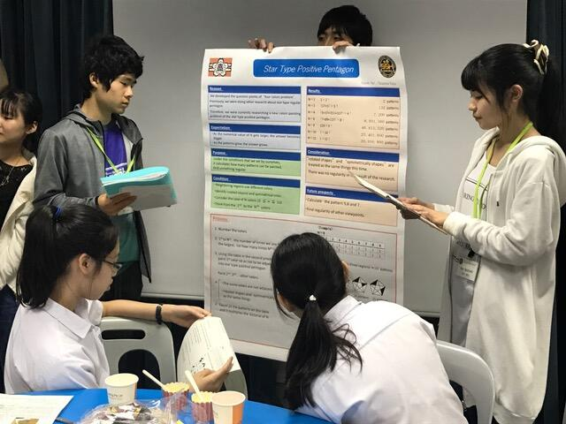
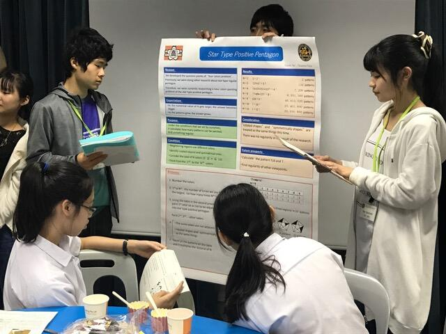

文字
背景
行間

_
ＳＳＨシンガポール海外研修３日目①
平成31年1月25日（金）研修最終日です。午前は、シンガポール国立大学で末田博士によるカラスのドローン開発に関する講義を受けました。生徒たちは、海外で研究する日本人の方から直接講義を受け、大変刺激になっていました。研究題材の面白さを感じたのと同時に、題材を見つける難しさも感じたようです。
ＳＳＨシンガポール海外研修２日目③
平成３１年１月２４日（木）午後は、スイスコテージセカンダリースクールで課題研究の成果を英語でプレゼンテーションして、生徒同士の交流をしました。現地校の科学部の生徒４５名と、お菓子を食べながらの交流でした。日本での準備の時には、心配していた生徒も、学校での練習以上に盛り上がっていました。


ＳＳＨシンガポール海外研修２日目②
平成３１年１月２４日（木）午前のシンガポールポリテクニックでの研修が終わりました。内容はＤＮＡに関するワークショップと講義でした。ワークショップでは、電気泳動を使い不明なＤＮＡのバンドパターンから、何のＤＮＡかを特定する実験やイチゴとキウイからＤＮＡを取り出す実験を行いました。講義はＤＮＡについての基本的な内容でした。生徒達は、オールイングリッシュで初めての実験でしたが、なんとか食いついていました。学生との交流も実験を通じて仲良くなっていました。
ＳＳＨシンガポール海外研修２日目①
平成３１年１月２４日（木）ＳＳＨシンガポール海外研修２日目がスタートしました。今までの、成果を英語でプレゼンテーションする本番です。まずは、朝食でエネルギー補給をしてから研修に向かいます。生徒達は、みんな元気に朝食を食べていました。
ＳＳＨシンガポール海外研修１日目終了
平成３１年１月２３日（水）シンガポールに到着後、ホテルのレストランで夕食をとり機中の疲れをとり、２日目の英語での課題研究のプレゼンテーションに向けての練習を行いました。みんな頑張って練習をしていました。
ＳＳＨシンガポール海外研修 無事到着
１月２３日（水）ＳＳＨシンガポール海外研修１日目、無事に空港へ到着しました。飛行機で少々乗り物酔いした生徒もいましたが、生徒達はみんな元気です。バスでレストランに移動中です。
ＳＳＨシンガポール海外研修に出発しました。
平成31年1月23日（水）２年生理数科40名が、シンガポールに向けて出発しました。出発前に成田空港にお勤めの本校同窓会の方から激励の言葉をいただきました。その後出国手続きを行いました。シンガポールでは、シンガポールポリテクニックで最先端の科学技術の研修を受けたり、課題研究の研究成果を英語でスイスコテージセカンダリースクールにおいて発表し，シンガポールの学生と交流したりするなど、多くの研修を行います。
ＳＳＨシンガポール海外研修事前指導
理数科２年生の生徒達は、来週１月23日（水）から始まるＳＳＨシンガポール海外研修のなかで、ポスターセッションを行います。そこでは今まで頑張ってきた課題研究の成果を英語で発表します。この研究発表でより良い成果を得られるよう先週1月11日(金)と本日18日(金)の２日間、千葉大学の留学生の方々のご協力をいただき、英語による発表練習を行いました。留学生の方々からは、たいへん丁寧にご指導をいただきました。現地での発表本番に向けて生徒にとってとても良い充実した研修になったと思います。留学生の皆さん本当にありがとうございました。
関東・甲信越静SGH課題研究発表会
平成30年12月23日（日）立教大学において第3回関東・甲信越静地区SGH課題研究発表会が行われ、本校から4チームが参加しました。英語ポスターセッションに1チーム、日本語プレゼンテーションに1チーム、英語プレゼンテーションに2チーム出場し、各々の研究発表を行いました。最後にプレゼンテーションを行ったチームは、立ち見が出るほどのたくさんの方を前に堂々と発表し、会場を盛り上げました。発表会に参加した生徒は他校の研究発表に刺激を受けるとともに、それぞれ新たな課題を見つけました。発表後は立教大学のイルミネーションに飾られたヒマラヤ杉を眺めながら帰路につきました。
スマホ・ケータイ安全教室
平成３０年１２月２１日（金）午前１１時から本校体育館において、NTTドコモ株式会社スマホ・ケータイ安全教室インストラクター上島あい先生をお招きし、御講演いただきました。主にSNSやコミュニケーションアプリのリスク（個人情報が特定され犯罪に巻き込まれる危険性、文字のみのやりとりのため気持ちが伝わらないことによる誤解やトラブルに結びつく危険性など）について、具体的にお話しいただきました。人権に関わることや心の問題にも言及し、トラブルについて他人事として考えないことが重要だということがよくわかる内容でした。
Girls’ Rocketry Challengeプログラムの修了式がありました
１２月１５日（土）にGirls’ Rocketry Challenge（GRC）プログラムの修了式がありました。
これまでの活動報告を行い、モデルロケットを作る際に工夫した点などを英語で発表してきました。修了式の後は、今回のプログラムを支援してくださっている企業の方々とも英語で交流しました。
今回の活動を通じて、データをとりながら工夫してものを作る楽しさや大変さを経験することができました。これまで御協力くださった方々に感謝申し上げます。


これまでの活動報告を行い、モデルロケットを作る際に工夫した点などを英語で発表してきました。修了式の後は、今回のプログラムを支援してくださっている企業の方々とも英語で交流しました。
今回の活動を通じて、データをとりながら工夫してものを作る楽しさや大変さを経験することができました。これまで御協力くださった方々に感謝申し上げます。
防災避難訓練が行われました。
平成３０年１２月１８日（火）７限に火災を想定した防災避難訓練を実施しました。避難指示の放送は６限が終わった時点で流しました。生徒は、課題研究に係るグループ活動を行っており、教室、LL教室、コンピュータ室、図書室等、活動場所が様々でしたが、速やかにグランドに避難することができました。その後１年生は消火訓練、２年生は煙体験を実施しました。１年生は、初期消火の方法を学び取るとともにその重要性を認識し、２年生は煙にまかれた時の状況を疑似体験をすることで、いざという時の自分の行動について考える機会となりました。ご協力くださった佐倉市八街市酒々井町消防組合の皆様、佐倉防災の皆様、ありがとうございました。

SGH全国高校生フォーラムに参加
平成３０年１２月１５日（土）スーパーグローバルハイスクール全国高校生フォーラムが東京国際フォーラムで行われました。本校からは２年G組生徒3名が参加しました。午前はテーマ別分科会に参加し「水・環境・エネルギー・気候変動」に係る課題や解決に向けた取組などについて、他校生徒と英語でディスカッションを行いました。午後は「印旛沼の生態系保護」をテーマにした研究についてポスターセッションを英語で行いました。発表、質問に対する応答とも的確に行うことができました。
マレーシアの高校との交流
平成３０年１２月１０日（月）、本校にマレーシアの高校 KOLEJ ISLAM SULTAN ALAM SHAH の生徒３５名、引率の先生３名が来校しました。本校地域交流施設で歓迎式を行なったあと、国際交流委員会生徒４名の案内で展示室、記念館を見学しました。その後、１年G組生徒と昼食交流を行ないました。５時間目の１年G組のコミュニケーション英語では、本校生徒が英語で日本文化（折り紙、書道、紙相撲、よさこいソーラン）を紹介し、マレーシアの高校生が体験しました。６時間目は、２年G組のコミュニケーション英語でマレーシアと日本の文化の違いについてディスカッションを行ない、その後マレーシアの文化体験（王冠ゲーム、マレー版お手玉、アラビア版書道等）を行ないました。どちらの授業も英語でコミュニケーションをとりながら体験活動に積極的に取り組みました。７時間目は、２年G組の生徒と交流会を行ないました。マレーシアの生徒のファッションショー、本校生徒のダンス、合唱などで交流を深めました。最後に記念品交換、交流証明書授与式、写真撮影を行ない、名残惜しい中、交流を終えました。本校生徒にとって大変ありがたい機会でした。KOLEJ ISLAM SULTAN ALAM SHAH の皆様、本日はありがとうございました。この後もよい旅を続けてください。また、この機会をくださった千葉県商工労働部観光誘致促進課の皆様に感謝いたします。
こちらもクリックしてください。→SGH
歳末助け合い募金
１２月７日（金）に生徒会執行部の生徒６名が京成佐倉駅前にて、歳末助け合い募金を行いました。途中から吹奏楽部の有志４名も加わり、募金活動を一緒に盛り上げてくれました。考査期間が終わった直後で、冷え込んできた中活動してくれた生徒の皆さん、お疲れ様でした。
また、募金してくださった地元の皆さま、先生方や生徒の皆さん、御協力いただきありがとうございました。


また、募金してくださった地元の皆さま、先生方や生徒の皆さん、御協力いただきありがとうございました。
３年生保護者進学説明会
平成３０年１２月１日（土）本日、３年生保護者対象の進学説明会がありました。これから、生徒が本格的に入試を乗り切るための保護者の皆様への情報提供等の機会です。１９０名の保護者の方が参加されました。
初任者研修の研究授業がありました
平成３０年１１月３０日（金）４限目、本年度新規採用となった藤井教諭が、３年生の「ＧＬ政治・経済」の授業で初任者研修の研究授業を行いました。内容は、消費税増税の増収分の使い道についての内容でした。班別の話し合いの時間では、生徒たちの活発な意見交換がされていました。

２１世紀枠候補校表彰式が行われました。
平成３０年１１月２６日（月）午後３時３０分から、本校応接室で、２１世紀枠候補校表彰式が行われ、本校が第９１回選抜高校野球大会における千葉県の２１世紀枠候補校に選ばれたことについて、千葉県高等学校野球連盟から表彰されました。
式では、千葉県高等学校野球連盟会長圓城寺様、毎日新聞社千葉支局長木戸様からお言葉を頂戴するとともに、会長から表彰状をいただきました。その後本校校長がお礼方々御挨拶申し上げました。式には、このほかに千葉県高等学校野球連盟事務理事石丸様、本校野球部藤井部長、堀内監督が出席しました。
本日の表彰は、本校及び本校野球部にとって大変誇らしく、励みになりました。
式では、千葉県高等学校野球連盟会長圓城寺様、毎日新聞社千葉支局長木戸様からお言葉を頂戴するとともに、会長から表彰状をいただきました。その後本校校長がお礼方々御挨拶申し上げました。式には、このほかに千葉県高等学校野球連盟事務理事石丸様、本校野球部藤井部長、堀内監督が出席しました。
本日の表彰は、本校及び本校野球部にとって大変誇らしく、励みになりました。
レスリング部 関東選抜大会の出場が決まりました
１１月２３日（金）、２４日（土）佐倉市民体育館にて、新人大会（県大会）が開催されました。
本校からは、２年生の飯島慎一郎君が９２ｋｇ級で出場しました。
ノルディック方式というリーグ戦で試合が進められ、最初のリーグ戦では１勝１敗でした。
準決勝では敗退したものの、 ３位決定戦で見事勝利しました。
その結果、２月２日（土）、３日（日）に群馬県館林市で開催される、
関東選抜大会の出場が決まりました。
関東大会でも活躍できるよう、日々練習に励みます。
本校からは、２年生の飯島慎一郎君が９２ｋｇ級で出場しました。
ノルディック方式というリーグ戦で試合が進められ、最初のリーグ戦では１勝１敗でした。
準決勝では敗退したものの、 ３位決定戦で見事勝利しました。
その結果、２月２日（土）、３日（日）に群馬県館林市で開催される、
関東選抜大会の出場が決まりました。
関東大会でも活躍できるよう、日々練習に励みます。
顧問 岡田
 |
オランダ派遣から無事帰国
平成３０年１１月２５日（日）成田国際空港にオランダ派遣生徒５名が予定時間より若干早く帰ってきました。全員元気です。空港で簡単に解団式を行い、１０時４０分に解散しました。１１月１５日から今日までいろいろな経験をし、交友関係も広めてきました。


中学生の皆さんへ
在校生・卒業生の方へ
アクセスカウンタ
2
0
4
4
7
7
1
リンクリスト